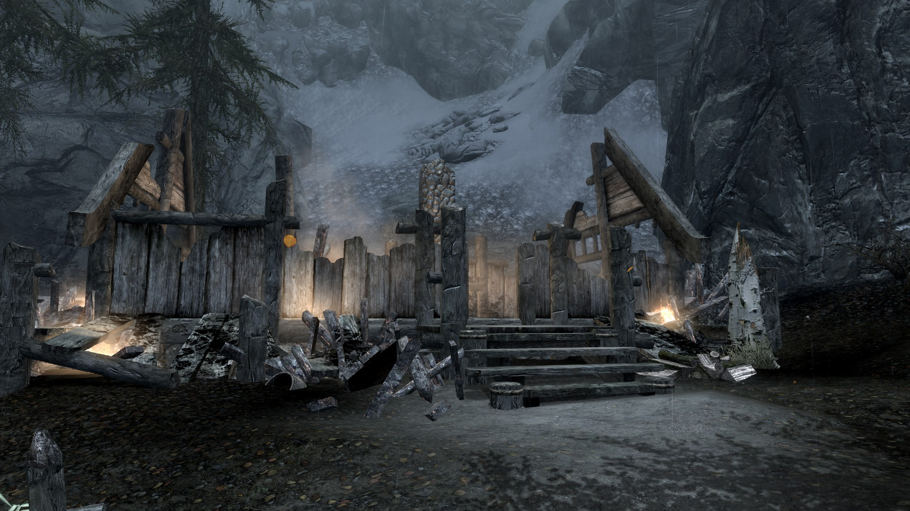

Morthal Sun
Desire and Pleasure Await
Alva invites any potential suitors for a night of romance on the outskirts of town, contact her at your whim
Help Wanted
- Gorm desires a letter be delivered to Captain Aldis in Solitude
- Jorgen requires help at the mill and will pay per bundle
A Small Overview of Morthal

Capital of Hjallmarch, Morthal sits upon the in-between of Solitude and Dawnstar. A land of swampland, a lesser people might question how one makes a living in the poorest hold of skyrim. But truer nords have never balked at a challenge. Home to a great number of alchemy ingredients, the waterways also feature a variety of fish.
Fog blankets the land, concealing a great deal of creatures and ruins that dot the landscape. Though the danger is present, residents hardy enough to withstand the troubles enjoy life isolated from the rest of the province.
It is said with little substantive evidence, that the noble Whispmother originates from this land, with the famed Pale Lady stealing away residents children to replace her own.
A Tragedy In Morthal
A fire broke out overnight at the Hroggar residence earlier last night.
While Hroggag managed to survive the blaze, we are unhappy to report that his wife and daughter had already been burned alive
Donations to assist Hroggar in his time of need may be directed to the home of Alva, who has voulenteered to house him until such time as he is ready to rebuild his residence.